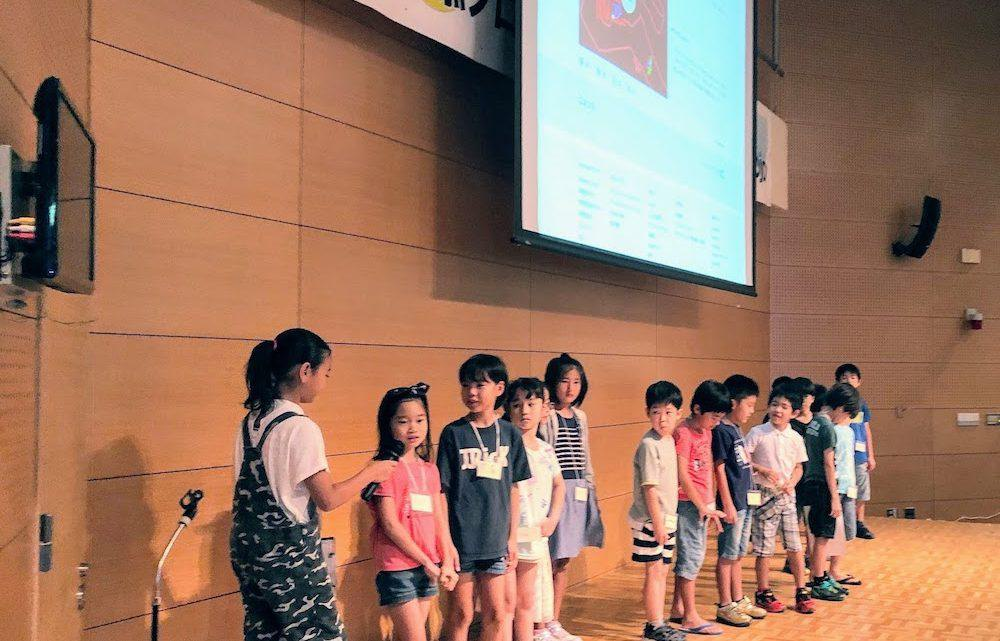
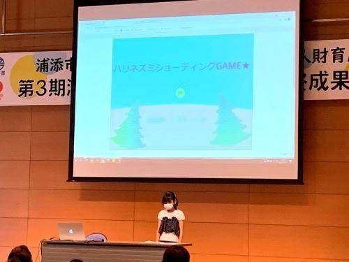
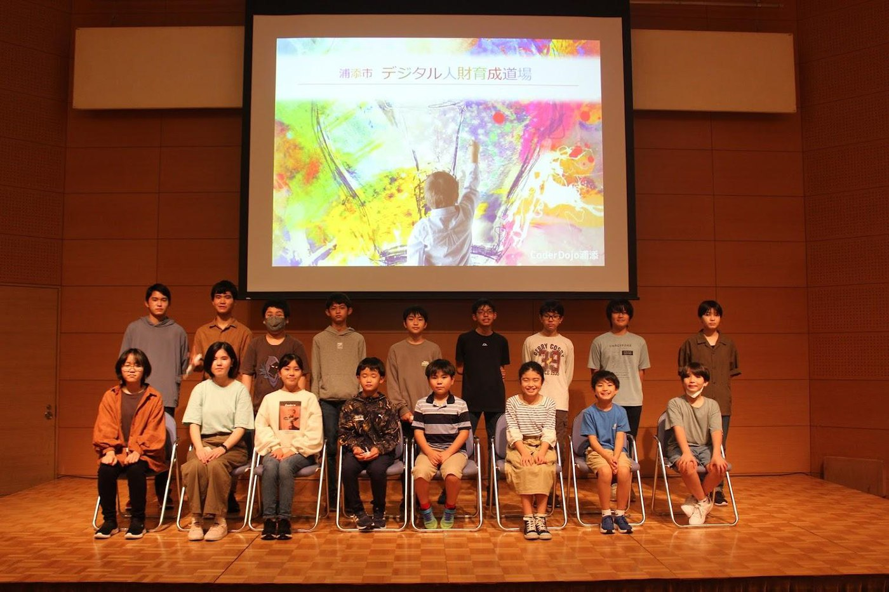
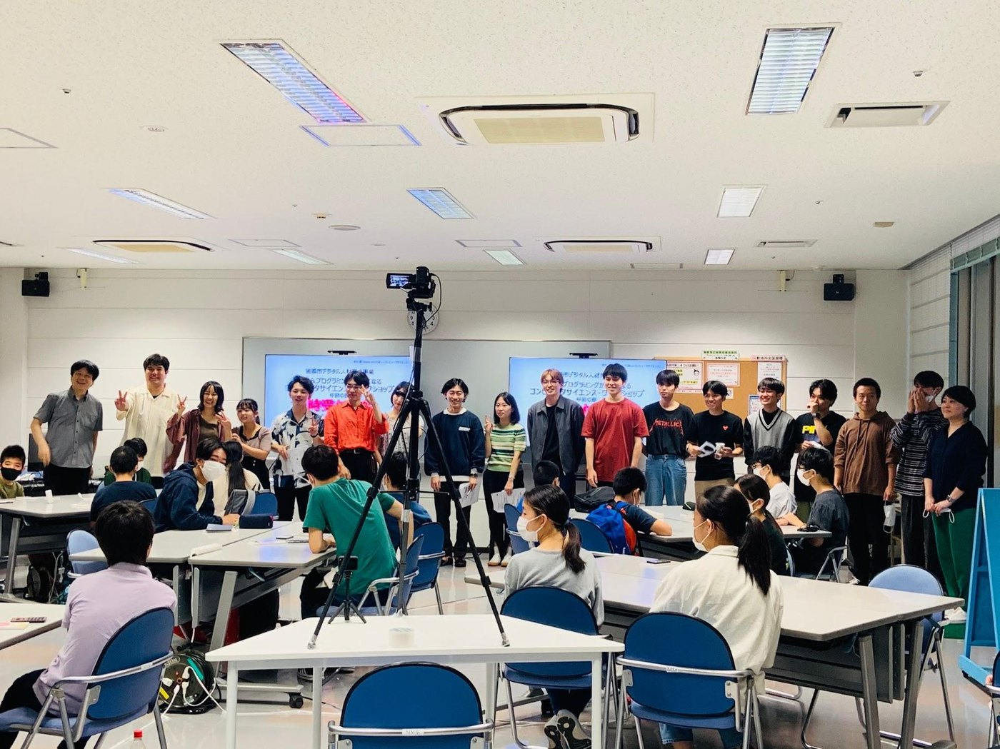
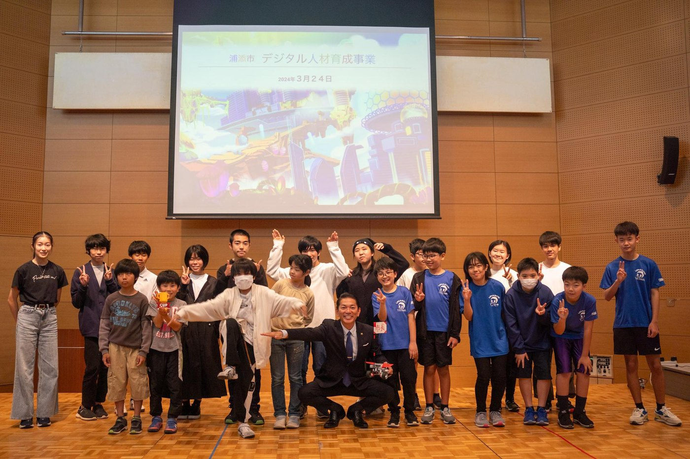
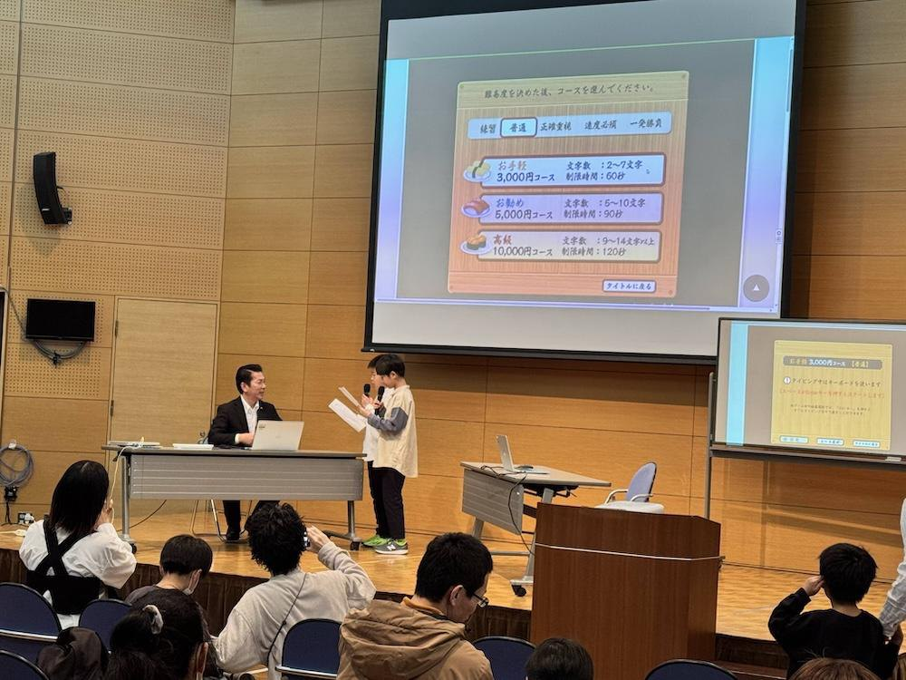
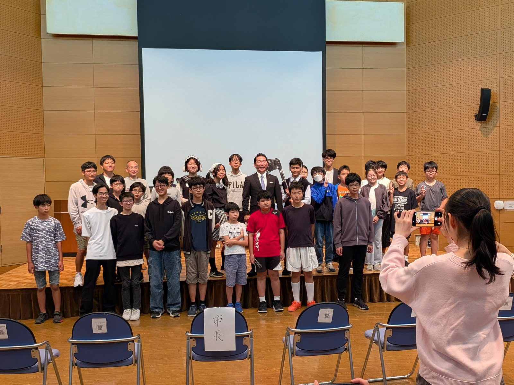

2026年度の募集は終了しました
AI時代の学び方に挑戦する2026年度の参加募集は終了しました。募集内容はお知らせページで確認できます。
事業概要
浦添市デジタル人材育成事業は、浦添市内の18歳未満の子たちに、生成AI、プログラミング、ゲーム・アニメーション制作、ロボコンチャレンジの機会を通して、自身の関心に向き合い、取り組むことを自ら決め、保護者も一緒になって、これからの学びを探究していく、未来の地域を支える人材を支える活動です。
ゲーム・アニメーション制作とロボットプログラミング
初年度は2期制で実施し、作品制作、成果発表、ロボットプログラミングに取り組みました。
2020年度オンラインと対面を組み合わせたハイブリッド開催
感染症対策のもと、PC・Wi-Fi貸出やオンライン支援を取り入れ、子どもたちの学びを継続しました。
2021年度PBLと地域プロジェクト
AI、ノーコード、3DCGなどの体験を経て、浦添をテーマにしたチームプロジェクトへ発展しました。
2022年度デジタル体験と外部連携
Minecraft、ロボット、アプリ開発、コンピュータサイエンスイベントなど、多様な学びを組み合わせました。
2023年度ロボット部門とアプリ開発部門
WRO沖縄推進委員会と連携し、ロボット競技とアプリ開発・コンテスト挑戦を並行して進めました。
2024年度WROへの挑戦と親子でデジタル創作
ロボット部門では全国大会へ挑戦し、親子創作では生成AIを使ったLINEスタンプ、電子書籍、アプリ制作に取り組みました。
2025年度WROとプログラミング実践、地域イベント運営
ロボット部門とプログラミング部門を実施し、WROへの挑戦、体験イベント運営、イベントアプリ開発、最終報告会での発表までを行いました。
年度別の取り組み
2019年度から2025年度までの実施報告書をもとに、各年度の取り組みを紹介しています。2026年度以降も実施内容を順次追加します。

浦添プログラミング道場
ゲーム・アニメーション制作とロボットプログラミングに取り組んだ初年度の実施内容を紹介します。

ハイブリッド開催と作品制作
オンラインと会場参加を組み合わせ、Scratchを中心とした作品制作に取り組みました。

PBLと地域プロジェクト
ワークショップで技術に触れ、浦添をテーマにしたチームプロジェクトへ発展させました。

デジタル体験と外部挑戦
Minecraft、ロボット、アプリ、CSイベントなど多様な体験とPBLを実施しました。

ロボット部門とアプリ開発部門
WROやプログラミングコンテストを目指し、高度な制作と発表に取り組みました。

ロボットと親子デジタル創作
WROへの挑戦と、生成AIを使ったLINEスタンプ・電子書籍・アプリ制作を進めました。

ロボット部門とプログラミング部門
WRO への挑戦、作品制作、体験イベント運営、イベントアプリ開発、最終報告会での発表までを紹介します。
募集終了
参加募集は終了しました。実施内容は素材確認後に追加予定です。